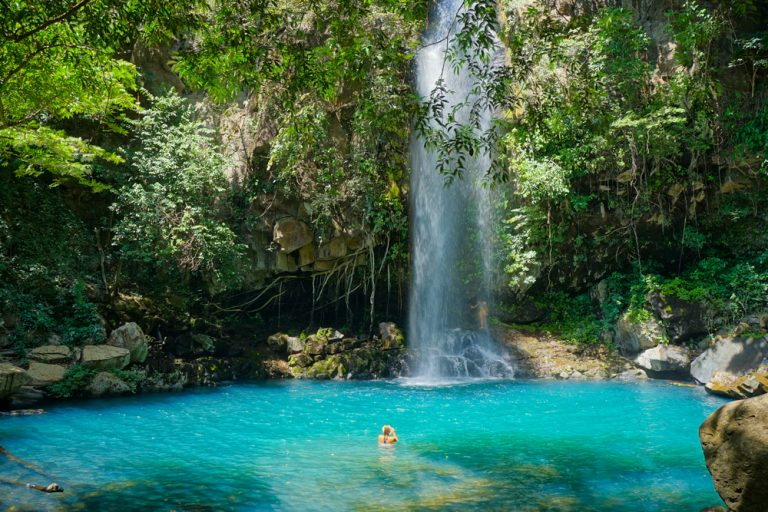
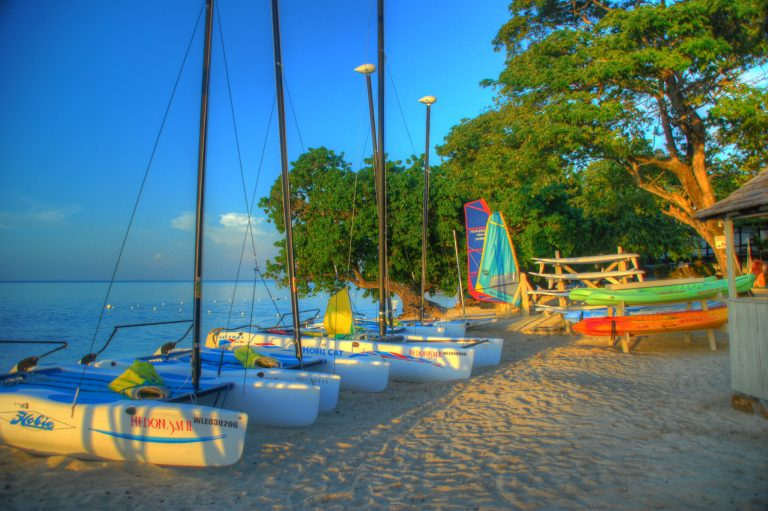
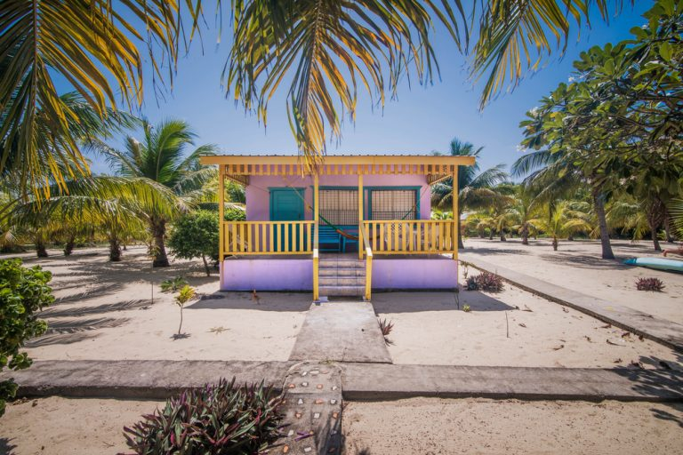
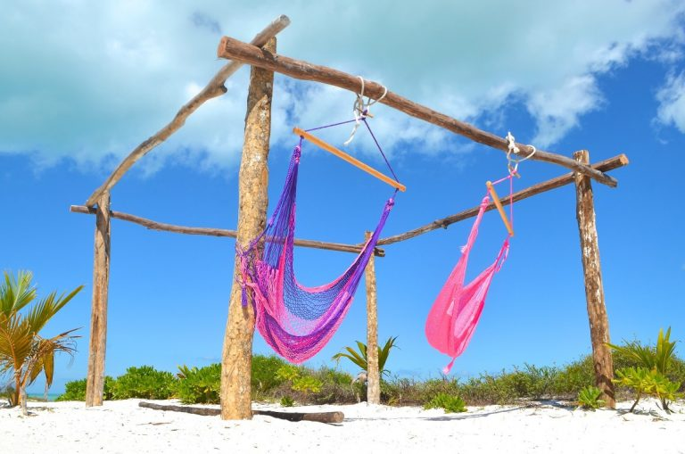
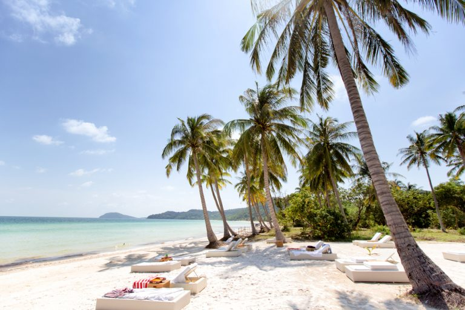

Posted by: Walter Kiprotich
It is located in Costa Rica's Pacific coast offering awesome pura vida. The province offers cost effective tropical vacation in terms of hotels and afforadability of activities.It is indeed a family friendly place with good beach hotels with on-site restaurants.
It is close to the Montego Bay with an upscale blend as well as cheap hotels. There is the seven-mile beach and coral reefs without overcrowding. You can fly directly into Montego Bay cheaply from most international hubs.The environment is onsite appealing nest most scheduled hotels are nestled in rocky places.
The destination is a fishing village located in the southeastern side of Belize; it is among the popular country's tourist destinations.it is a bit far from the city centre but the journey is really adventuruos since it is along the coastline. it has services like diving, snorkelling, and fishing. the best hotel loved by guests is the Paradise Vacation Hotel.
Quintana Roo in Mexico is a wonderful tropic destination that has had the highest number of visitors this year.it has tourist sites like Playa del Carmen, Tulum, Cancun, Cozumel, and the River Maya.
The place is easily accessible through inexpensive and short flights from Saigon. Phu Quocis a form of a paradise of picturesque island. It is located off Mekong Delta which has natural beaches as well as affordable luxurious resorts thus a great tropical destination getway. the resorts have a BAlinese touch, ocean views, lush grounds, outdoor showers and inexpensive night rates.
